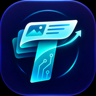

| 種別 | 内容（冒頭） | 投稿者 | 通報 | 状態 | 操作 |
|---|---|---|---|---|---|
| 投稿 | タイトル… | ニックネーム | 3（スパム2・その他1） | 非表示 | 復帰 削除 停止 |
| コメント | コメント本文… | ニックネーム | 1（誹謗中傷） | 表示中 | 削除 停止 |

技術を、めくって発見する。 ／ design.md v2.2 と対応（画面IDは設計書3章）
| 種別 | 内容（冒頭） | 投稿者 | 通報 | 状態 | 操作 |
|---|---|---|---|---|---|
| 投稿 | タイトル… | ニックネーム | 3（スパム2・その他1） | 非表示 | 復帰 削除 停止 |
| コメント | コメント本文… | ニックネーム | 1（誹謗中傷） | 表示中 | 削除 停止 |